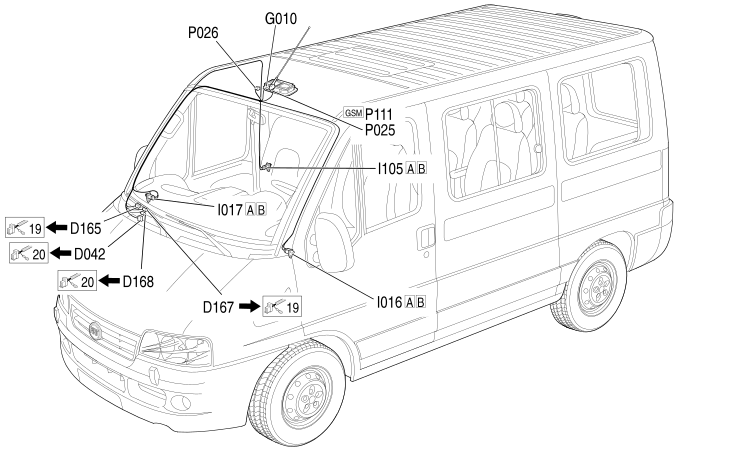

102 GPS/GSM/RADIO AERIAL BRIDGE
- Path
- Electrical equipment > 2 WIRING > 102 GPS/GSM/RADIO AERIAL BRIDGE
- Kind
- wiring harness
- Applies to
- all engines; all production periods
- Interactive page
- https://sloeber94.github.io/elrnDB-fDct/en/#/244002293
Applies to: all engines; all production periods

Topics that link to this page (15)
- D042 DASHBOARD/COURTESY LIGHTS COUPLING (GPS/GSM/RADIO AERIAL BRIDGE)
- D165 OPTIONAL DASHBOARD/OPTIONAL COURTESY LIGHT COUPLING (GPS/GSM/RADIO AERIAL BRIDGE)
- D167 COAXIAL CABLE FOR GSM AERIAL COUPLING (GPS/GSM/RADIO AERIAL BRIDGE)
- D168 COAXIAL CABLE FOR RADIO AERIAL COUPLING (GPS/GSM/RADIO AERIAL BRIDGE)
- D168 COAXIAL CABLE FOR RADIO AERIAL COUPLING (GPS/GSM/RADIO AERIAL BRIDGE)
- G010 FRONT COURTESY LIGHT (GPS/GSM/RADIO AERIAL BRIDGE)
- I016A SWITCH ON LEFT FRONT DOOR (GPS/GSM/RADIO AERIAL BRIDGE)
- I016B SWITCH ON LEFT FRONT DOOR (GPS/GSM/RADIO AERIAL BRIDGE)
- I017A SWITCH ON RIGHT FRONT DOOR (GPS/GSM/RADIO AERIAL BRIDGE)
- I017B SWITCH ON RIGHT FRONT DOOR (GPS/GSM/RADIO AERIAL BRIDGE)
- I105A SWITCH ON RIGHT SLIDING DOOR PILLAR (GPS/GSM/RADIO AERIAL BRIDGE)
- I105B SWITCH ON RIGHT SLIDING DOOR PILLAR (GPS/GSM/RADIO AERIAL BRIDGE)
- P025 AERIAL FEED/AMPLIFIER (GPS/GSM/RADIO AERIAL BRIDGE)
- P026 HANDSFREE MICROPHONE (GPS/GSM/RADIO AERIAL BRIDGE)
- P111 RADIO/GSM AERIAL (GPS/GSM/RADIO AERIAL BRIDGE)